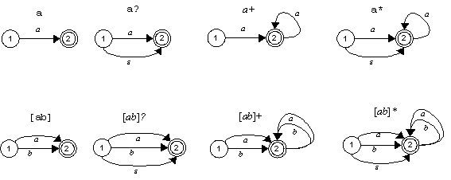
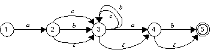
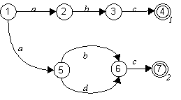
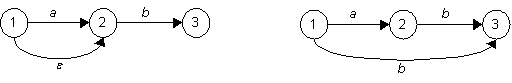
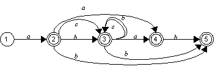
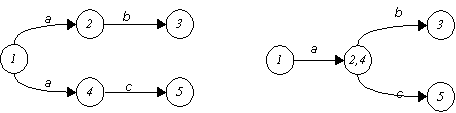
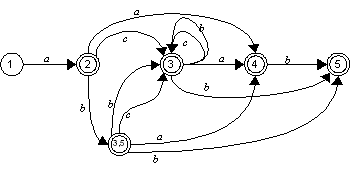
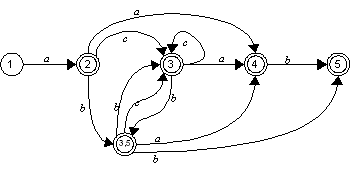
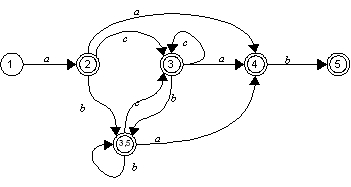

Converting a set of patterns to a DFATransforming a set of of patterns in a Non Deterministic Finite Automaton (NFA) and then in a Deterministic Finite Automaton (DFA) is the standard approach for the automatic creating lexical scanners (LEX, re2c, ...). Any NFA with n states can be transformed in an equivalent DFA (i.e. a DFA that recognize the same language) with (in the worst case) n2 states. The number of states has a direct impact on the complexity and size of the lexical scanner and also on the time needed to create it. Even if the worst case is very rare (pathological cases have to be built on purpose), it could be worthwile to understand how to Even if the algorithm presented here is a novel creation of mine, it uses techniques and concepts that are described in the literature. The bibliografy section in the documentation page provides links to books and articles that are most relevant. Having to deal with patterns that restrictedThe YRX algorithm to create a DFA is split in three steps:
1. Create NFAThe creation of the NFA proceeds as depicted in the following figure:
For each term of the expression the corresponding set of arcs is appended to the automaton. The figure below shows an example for the expression "a[bc]*a?b?" 
By construction, the resulting NFA has some property that we'll use later for transforming it in a DFA:

2. Eliminate empty transitionsTo get rid of empty transitions (transitions that can be executed without consuming any input) we can proceeds from the final state backwards (thanks to properties 1 and 2 described in the previous section) and replace them with copies of the arcs to the next state.The figure below shows the basic concept of copying arcs from a state to another: 
the two steps transition from 1 to 3 (follow the empty transition from 1 to 2 and then the b transition from 2 to 3) is replaced by a single transition from 1 to 3 labeled with the character b. The following figures show how the NFA for "a[bc]*a?b?" is transformed by this step.  Note that the property of being a final state is propagated back when eliminating the empty transitions. 3. Create the DFAThe only source of non-determinism that is left is the presence of more than one arc with the same label from a state to different states. To eliminate them we'll merge the destination states as shown in the next picture:
the arcs from 1 to 2 and from 1 to 4, both labeled with "a", are replaced by a single arc from 1 to a newly created state 2,4 which has copies of the arcs from state 2 and state 4. Note that we need to keep track of the merged states to avoid mergin the same states over and over again. ExampleHere is how the process works on the expression "a[bc]*a?b?".The initial NFA is: 
Now we'll process the successors of state 2. The state 3
has two arcs labeled with "b" one to 3 the other to 5 but we
already merged those two states so the arcs are replaced with an arc to
the merged state 3,5
The other successor of 2 is 3,5 that has, again, two arcs
labeled with "b" leading to 3 and 5. We'll replace them with a loop
from 3,5 to itself.
No other non-determinism is left and the result is the DFA we were looking for CapturesThe main feature of YRX is the ability of capturing sub match. YRX uses the concept of tagged arcs as suggested by Laurakiri in his thesis "xxx".Captures are included in the initial NFA as tagged empty transition and then propagated during the determinization steps described above Captures |